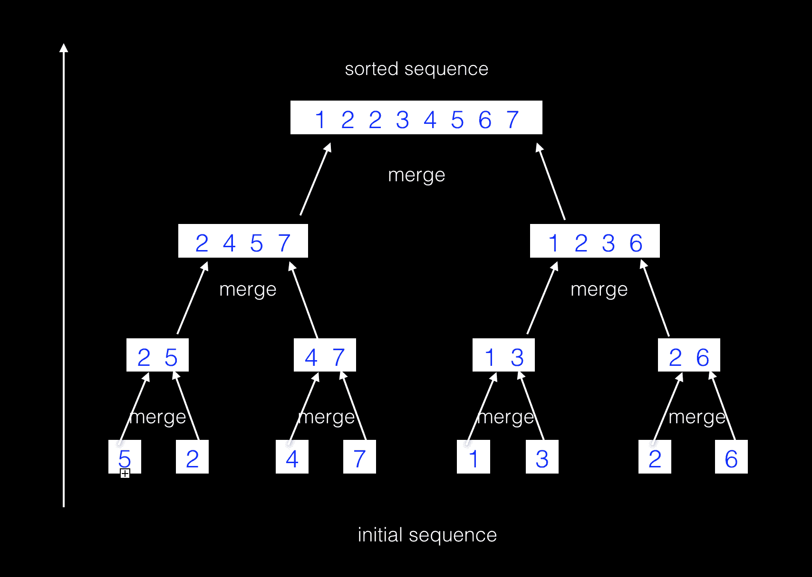

algorithm
merge sort and the number of inversions
- 2014-05-30
- Fenice Sun
归并排序和逆序数
分治法(Divide and conquer)是一种常用的算法策略，而归并排序就是基于分治思想的一种高效排序方法。基于分而治之的策略可以高效解决很多可分割的问题，比如求序列的逆序数。
分治法
思想：
将一个规模较大的问题（原问题）划分成n个规模较小而结构与原问题相似的子问题，递归地解决这些子问题，将子问题解的结果合并处理得到原问题的解。
解决步骤：
- 分解（divide): 将原问题分解成一系列相同结构的子问题
- 解决（conquer): 递归解决子问题。如果子问题足够小，直接求解
- 合并 (combine): 合并子问题的解
归并排序
解决方法：（按照分治的解决步骤）
- divide: 将待排序序列递归地二分分割成子序列，直到子序列长度为1
- conquer: 对子序列分别进行归并排序
- combine: 将两个已排序序列合并成一个统一的已排序序列
若对子序列排序时，长度为1时为递归边界。数组中仅含有一个元素时数组必定有序。
时间复杂度分析：
分治法中，一个输入规模为n的序列实例，被划分成两个规模为n/b的问题，其中a个实例是需要求解的，假设n为b的幂，则有：
T(n) = a T(n/b) + f(n)
f(n)表示将a个子问题合并所需要的复杂度。那么在归并排序中，二分地递归分割，合并的时间复杂度为O(n), 则有
T(n) = 2 * T(n/2) + O(n)
规模为n的序列的划分后递归树高度为lg(n), 每轮合并复杂度O(n), 总复杂度近似为O(nlgn)
排序过程如图：

废话少说，上代码
//
// Created by fenice sun on 12/1/2017.
//
#ifndef ALGORITHM_SORTER_H
#define ALGORITHM_SORTER_H
#include <functional>
template <typename T>
class Sorter
{
public:
static void MergeSort(T array[], int begin, int end, const std::function<int(T, T)> &cmp);
static void Merge(T array[], int p, int q, int r, const std::function<int(T, T)> &cmp);
};
template <typename T>
void Sorter<T>::Merge(T *array, int low, int mid, int high, const std::function<int(T, T)> &cmp) {
T * temp = new T[high - low + 1];
int i = low, j = mid + 1;
int k = 0;
while (i <= mid && j <= high) {
if (cmp(array[i], array[j])) {
temp[k++] = array[i++];
} else {
temp[k++] = array[j++];
}
}
while (i <= mid) {
temp[k++] = array[i++];
}
while (j <= high) {
temp[k++] = array[j++];
}
for (int r = 0; r < high - low + 1; ++r) {
array[low + r] = temp[r];
}
delete [] temp;
}
template <typename T>
void Sorter<T>::MergeSort(T *array, int begin, int end, const std::function<int(T, T)> &cmp) {
if (begin < end) {
int mid = (begin + end) / 2;
MergeSort(array, begin, mid, cmp);
MergeSort(array, mid + 1, end, cmp);
Merge(array, begin, mid, end, cmp);
}
}
#endif //ALGORITHM_SORTER_H
归并过程
上面的归并排序代码是一个很经典的分治法处理框架，MergeSort中将序列分割成前后两段子序列，然后递归地处理前后两段序列。这里分解和处理的操作在不同的分治问题中大体相同，（参考快速排序）而排序的核心算法就是归并操作Merge。
对两个有序序列进行归并的时候，可以看作对两摞有序的扑克牌进行归并，每轮依次选取两摞牌中最上面牌的最小／最大的那张，把选出来的牌放进新的序列。直到有一摞牌被拿完，这时再把未拿完的牌全部放进新的序列，完成归并操作。 而对有序数组进行二路归并的时候，先让游标i = j = 0, 同理每次选取两个数组当前游标对应下标最小／最大的那个值，然后将游标做自增操作，直到某个数组的值被全部放进新的序列，最后再将另一个数组的值放进新序列，最后的新序列一定是有序的，可以证明。而归并的过程也使整个排序过程十分稳定。
在对两个有序序列进行归并的过程中，由于要创建一个新的序列，因此在排序过程中会有一些额外的空间开销。
求序列的逆序对数量
逆序数定义：
对于一个序列中的n个元素，先规定各元素中有一个标准次序（例如n个不同的自然数，可规定从小到大为标准次序），于是在这n个元素中的任一排列，当某个排列的先后次序与标准次序不同时，就说有一个逆序。一个排列中的逆序对总数叫做这个排列的逆序数。
求解方法
朴素方法
枚举序列中的所有任意两个元素的排列，如果有逆序，则计数。枚举序列中的任意两个元素，时间复杂度为O(n^2)。
那么还有更好的方法吗？
当然有了，让我们回顾归并排序中的归并过程。举个例子，在合并两个有序数组（升序）
var left = [2, 4, 5] 和 var right = [1, 3, 6]的过程中，首先由于left数组有序，所以无逆序数，那么逆序数的出现只可能在right数组中，令i = j = 0， 第一轮的比较中left[i] > right[i]（2 > 1）, 并不符合升序，而left又全部有序，因此right[1]=1小于所有的left数组中的元素,这样由right中的元素1就导致了序列中有了3个逆序数，以此类推，right[2]导致了序列中有2个逆序数，right[3]符合升序，导致了0个逆序数。因此序列的逆序数总个数为3 + 2 = 5。
让我们来修改归并排序代码：
//
// Created by fenice sun on 12/1/2017.
//
#ifndef ALGORITHM_SORTER_H
#define ALGORITHM_SORTER_H
#include <functional>
template <typename T>
class Sorter
{
public:
static int inversion_count;
public:
static void MergeSort(T array[], int begin, int end, const std::function<int(T, T)> &cmp);
static void Merge(T array[], int p, int q, int r, const std::function<int(T, T)> &cmp);
};
template <typename T>
void Sorter<T>::Merge(T *array, int low, int mid, int high, const std::function<int(T, T)> &cmp) {
T * temp = new T[high - low + 1];
int i = low, j = mid + 1;
int k = 0;
while (i <= mid && j <= high) {
if (cmp(array[i], array[j])) {
temp[k++] = array[i++];
} else {
temp[k++] = array[j++];
inversion_count += (mid - i + 1);
//count
}
}
while (i <= mid) {
temp[k++] = array[i++];
}
while (j <= high) {
temp[k++] = array[j++];
}
for (int r = 0; r < high - low + 1; ++r) {
array[low + r] = temp[r];
}
delete [] temp;
}
template <typename T>
void Sorter<T>::MergeSort(T *array, int begin, int end, const std::function<int(T, T)> &cmp) {
if (begin < end) {
int mid = (begin + end) / 2;
MergeSort(array, begin, mid, cmp);
MergeSort(array, mid + 1, end, cmp);
Merge(array, begin, mid, end, cmp);
}
}
#endif //ALGORITHM_SORTER_H
加入了一个inversion_count静态变量用来统计逆序数的数量，在归并的过程中加入一行代码
inversion_count += (mid - i + 1);
对当前的逆序数进行计算，right当前游标指向的元素对应的逆序数为left序列中游标指向的当前元素及其右边的所有元素个数 mid - i + 1。那么我们现在就以归并排序O(lgn)的时间复杂度算出了序列的逆序数个数。远好于朴素方法的O(n^2)。